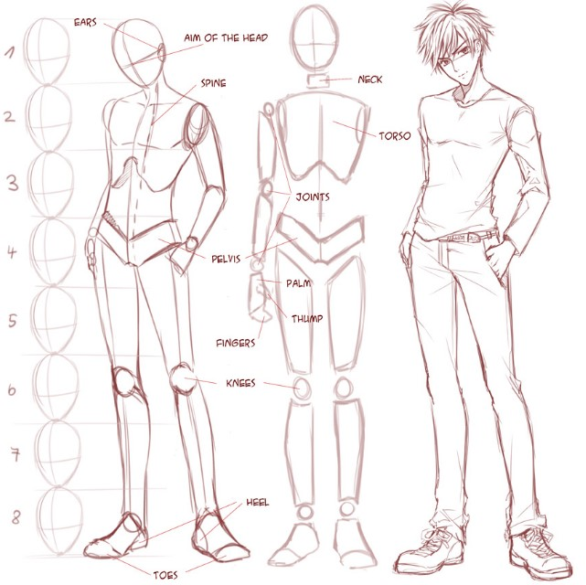
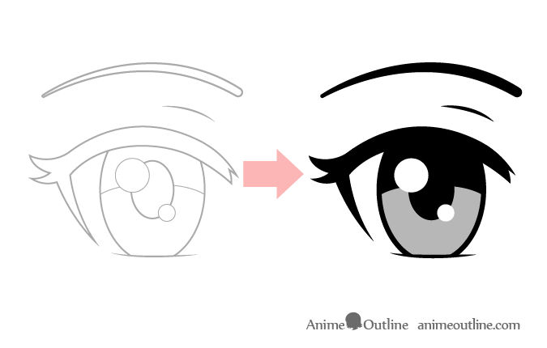
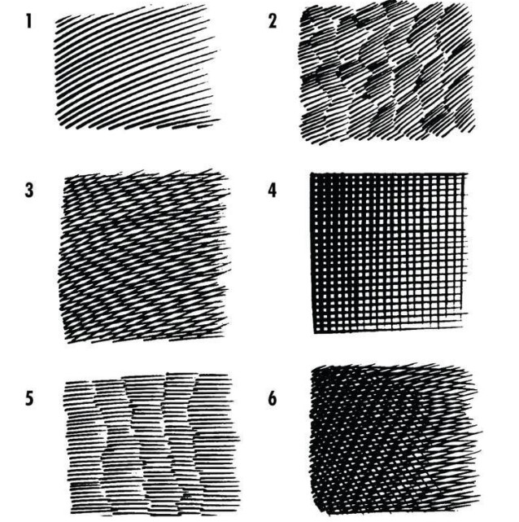

Aqui estão algumas dicas valiosas para aprimorar suas habilidades de desenho no estilo nipônico:
Estude a anatomia humana: Conhecer a anatomia é fundamental para desenhar personagens de maneira convincente...
Entenda as proporções:
No estilo mangá, os personagens muitas vezes têm olhos grandes e corpos esguios. Familiarize-se com as proporções específicas desse estilo para criar personagens autênticos.

Pratique expressões faciais:
Mangás frequentemente enfatizam expressões faciais vívidas. Pratique desenhando uma variedade de expressões para transmitir emoções diferentes.
Aprenda a usar sombras e luz:
A iluminação desempenha um papel crucial nos mangás. Pratique sombreamento para adicionar profundidade e dimensão aos seus desenhos.
Estudo de poses dinâmicas:
Mangás muitas vezes apresentam poses dinâmicas e cenas de ação. Estude fotografias ou use referências para aprimorar sua capacidade de desenhar poses interessantes e naturais.
Crie seu estilo único:
Embora aprender com outros artistas seja valioso, também é importante desenvolver seu estilo único. Experimente e descubra o que funciona melhor para você.
Detalhes nos olhos:
Os olhos são uma parte crucial da expressividade nos mangás. Pratique desenhar olhos de diferentes tamanhos e formas para transmitir emoções específicas.

Use linhas dinâmicas:
Mangás frequentemente fazem uso de linhas dinâmicas para retratar movimento e ação. Pratique desenhar linhas soltas e fluidas para adicionar energia às suas ilustrações.
Dominar a arte da hachura:
Hachuras (linhas paralelas usadas para sombreamento) são uma técnica comum nos mangás. Pratique diferentes estilos de hachura para criar texturas e sombras convincentes.

Estude diferentes estilos de mangá:
Existem vários subgêneros e estilos dentro do mundo dos mangás. Explore diferentes obras para se inspirar e entender as características distintas de cada estilo.
Use referências:
Não hesite em usar referências ao desenhar. Fotografias, outros mangás e ilustrações podem fornecer insights valiosos e ajudar a melhorar suas habilidades.
Pratique regularmente:
Como em qualquer habilidade, a prática constante é fundamental. Reserve um tempo regular para desenhar e experimentar novas técnicas.